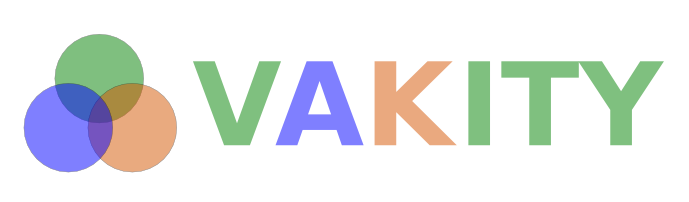

Analyzing Learning Styles From Afar
AN ANALYSIS TOOL FOR THE
VISUAL,
AUDITORY &
KINESTHETIC
LEARNING STYLES FRAMEWORK
To learn more about the framework you can visit the
Learning Styles Wiki page.
REST API
The Vakity app can be used as a RESTful service, providing an easy-to-implement analyzis engine for any HTTP enabled app. Results are returned as JSON. The following routes/verbs are available:
/rest/dictionary/visual
| cURL | curl http://vakity/rest/dictionary/visual |
| Result | {"see","look","appear","foggy","see eye to eye","in light of","get a mental picture","you can plainly see","clear cut","appears","make a scene","my perspective","under your nose","test_test",} |
/rest/dictionary/auditory
| cURL | curl http://vakity/rest/dictionary/auditory |
| Result | {"hear","listen","sounds","deaf","describe","as a manner of speaking","just idle talk","that rings a bell","clear as a bell","earful","tounge-tied","tounge tied","pay more attention to","hold your tounge","heard voices","hearing voices","within hearing range",} |
/rest/dictionary/kinesthetic
| cURL | curl http://vakity/rest/dictionary/kinesthetic |
| Result | {"feel","touch","get ahold of","hard","get a load of this","sharp as a tack","feeling","hot headed","hot-headed","pain in the neck","pain in the butt","pain in the ass","pain in the arse","boils down to","get a grip on","starting from scratch","keep your shirt on","panties in a twist","get in touch with","make a leap","slipped my mind",} |
/rest/analyze
| cURL | curl --data "writing_sample='feel see hear'" http://vakity/rest/analyze |
| Result | 3 Keywords and/or indicator phrases found. 1 Visual indicators. 1 Auditory indicators. 1 Kinesthetic indicators. 33% Visual. 33% Auditory. 33% Kinesthetic |